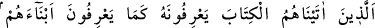

musunuz?” Bu hitap, müşriklere Allah’a ortak koştuklarını ikrar ettirmeye yöneliktir.
Onların bunu inkar etmeye imkanları yoktur. Çünkü onlar Allah’a ortak koşmakla
meşhur olmuşlardır. Âyet-i kerîmedeki soru inkâr ve azarlama içindir.
Onlara: Sizin iddia ettiğiniz şekilde Allah ile beraber başka tanrılar olduğuna “ben
şâhidlik etmem!” de.” Şayet siz buna şâhidlik ederseniz bilin ki o tamâmen bâtıldır,
geçersizdir.
“O, ancak tek bir tanrıdır.” Yani, ben Allah’dan başka ilah olmadığına, ulûhiyetin
yalnız ona ait bulunduğuna şâhidlik ederim, demektir. “Ben sizin” Allah’a “ortak
koştuğunuz şeylerden” putlardan uzağım.” de.” Emrin tekrarlanması, tekid içindir.
20. Kendilerine kitap verdiklerimiz onu (Resûlullah’ı) kendi oğullarını tanıdıkları
gibi tanırlar. Kendilerini ziyan edenler var ya, işte onlar inanmazlar.
Bu âyet-i kerîme bir önceki âyetin nüzul sebebi olarak geçen müşriklerin: “Ey
Muhammed, biz senin peygamberliğin hususunda yahudi ve hıristiyanlara sorduk...”
şeklindeki sözlerine cevap niteliğindedir.
“Kendilerine kitap verdiklerimiz” ifadesi ile kastedilenler, yahudi ve hıristiyanlardır.
“Kitap” ile kastedilen ise Tevrat ve İncil’dir.
“Onu” yani Muhammed (a.s.)’ı kendi kitaplarında zikredilen nitelikleri ve yaratılıştan
sahip olduğu huyları ile “oğullarını”n bu özelliklerini “tanıdıkları gibi tanırlar.”
Rivayet edilir ki, Rasûl-i Ekrem (s.a.) Medîne-i Münevvere’yi şereflendirdikleri
zaman Hz. Ömer (r.a.), Abdullah b. Selam’a bu âyeti kastederek şöyle dedi: “Allah
Teâlâ Peygamberi’ne (a.s.) bu âyeti inzal etti. Bu tanıma, nasıl oluyor?”
Abdullah b. Selam şöyle cevap verdi:
“Ey Ömer, içinizde onu görür görmez kendi oğlumu tanıdığım gibi tanıdım. Hatta ben
Muhammed’i oğlumdan daha iyi tanıdım. Çünkü ben kadınların ne yaptıklarını bilmem.
Ben şâhidlik ederim ki o, Allah katından gönderilmiş hak peygamberdir.”
Bunun üzerine Hz. Ömer (r.a.): “Ey İbn Selam, Allah seni muvaffak etsin” dedi.
“Ama kendilerini ziyana sokanlar,” O müşriklerle yahûdî ve hıristiyanlar, temiz
fıtratlarını bozarak ve îmanı gerektiren apaçık delillerden yüz çevirerek kendilerini
aldatmışlardır. Kalpleri mühürlü olduğu için “inanmazlar.” Çünkü aslî fıtratı
bozmaları ve akl-ı selîmi kaybetmeleri îman etmemelerine sebep olmuştur.